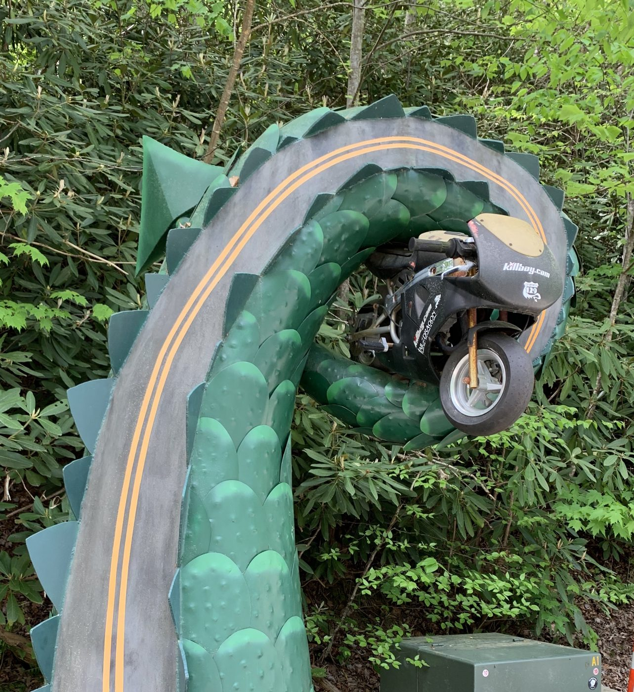
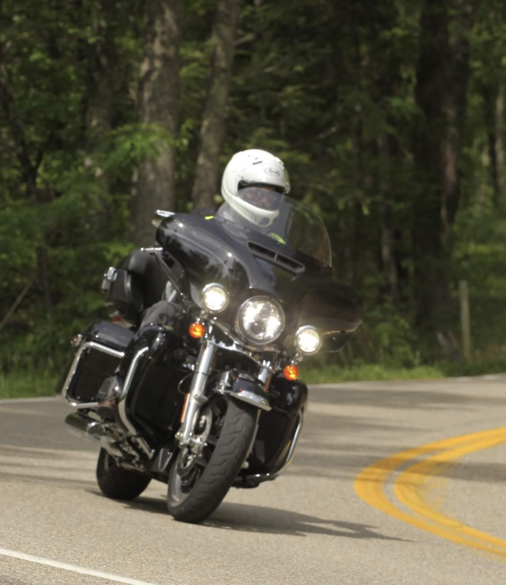
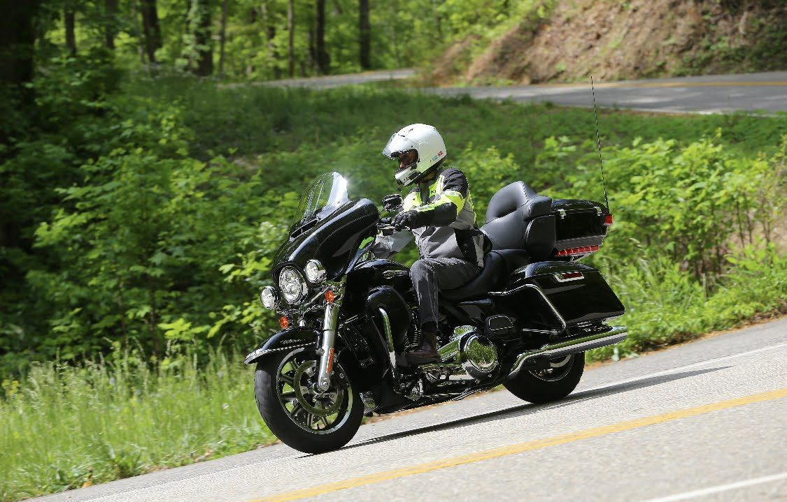
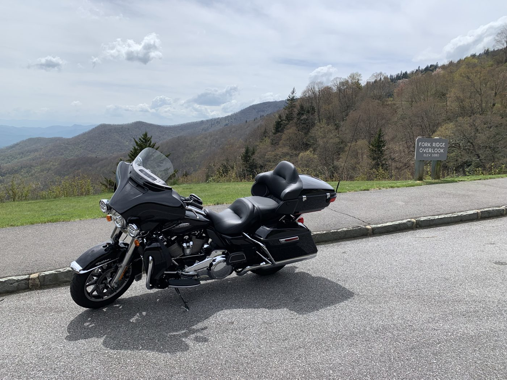
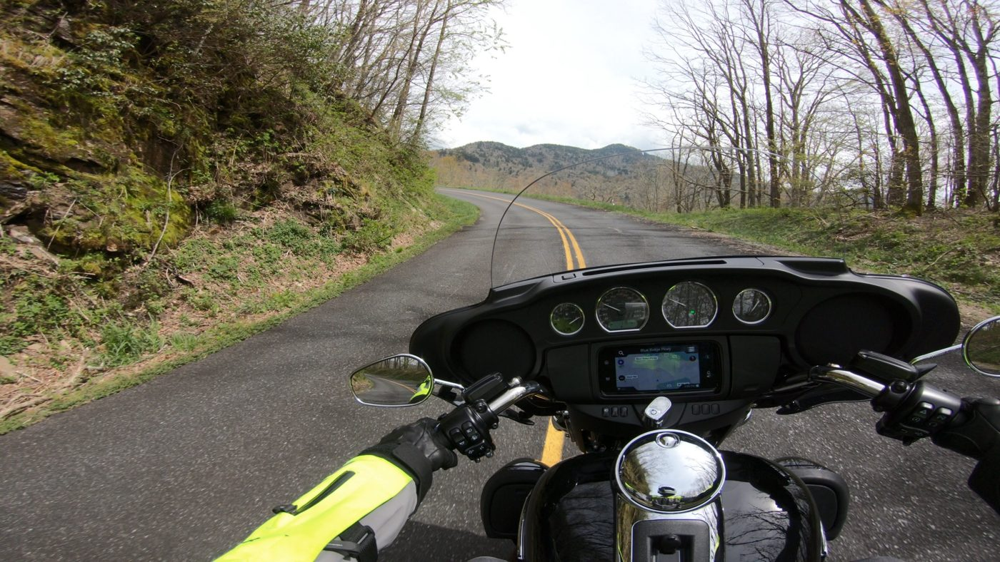
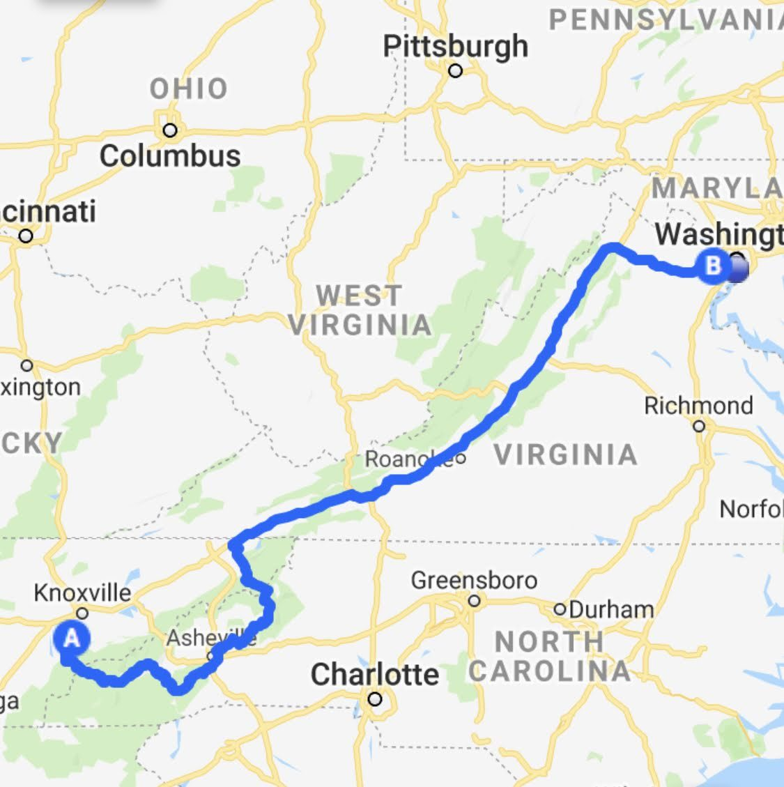
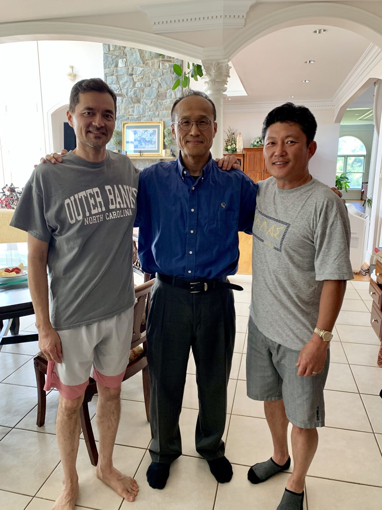

The route · May 1–3
Maryville, TN Fairfax, VA
672 mi
By way of
- Tail of the Dragon, Deals Gap
- Moonshiner 28
- Blue Ridge Parkway





United States / 2019
May 1–4, 2019 · Motorcycle ride
From the foothills of the Great Smoky Mountains at Maryville, Tennessee, through the Tail of the Dragon at Deals Gap and up the Blue Ridge Parkway through the Appalachians to Fairfax, Virginia.

States
Tennessee, North Carolina, Virginia
The route · May 1–3
672 mi
By way of





After the ride · May 3–4
